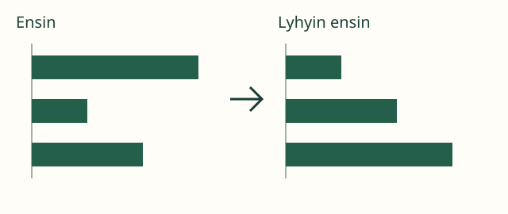
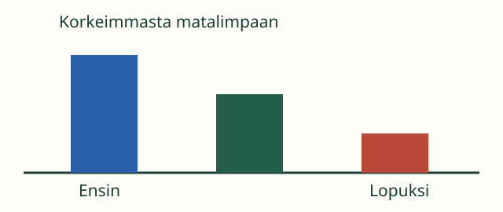

Aava kokoaa retken viirinauhat jonoon. Mistä päästä aloitetaan?
Aava kokoaa retken viirinauhat jonoon. Mistä päästä aloitetaan?
Sääntö kertoo järjestyksen
Tavoite: järjestän tavarat sovitun ominaisuuden mukaan.
Aava kokoaa retken viirinauhat jonoon. Mistä päästä aloitetaan?
Tavoite: järjestän tavarat sovitun ominaisuuden mukaan.
Oikaise nauhat. Aloita samalta viivalta. Etsi ensin lyhyin. Siirrä se jonon alkuun. Etsi sitten lyhyin niistä, jotka jäivät.

Tarkista vierekkäiset: seuraava nauha ei saa olla lyhyempi kuin edellinen. Jos kaksi ovat yhtä pitkiä, kumpi tahansa niistä saa tulla ensin.
Loikka pyytääkin tornit korkeimmasta matalimpaan. Nyt etsitään ensin korkein! Vertaa tornien korkeuksia samalta lattialta. Väri ei ratkaise.

Vanha lyhyin ensin -ohje ei siis käy joka tehtävään. Kuuntele tai lue, mitä ominaisuutta verrataan ja mihin suuntaan järjestetään.
Mieti: kaksi nauhaa ovat yhtä pitkät mutta eri väriset. Onko niiden keskinäinen järjestys väliä, kun sääntö koskee vain pituutta?
Ei ole. Kumpikin järjestys noudattaa pituussääntöä. Jos sääntö koskisi väriä, tarvittaisiin eri ohje.
Valitse nauhat yksi kerrallaan. Valittu siirtyy jonoon. Voit perua viimeisen valinnan ennen tarkistusta. Jono luetaan ylhäältä alas.
Ilman JavaScriptiä voit tehdä saman kolmella eripituisella paperisuikaleella.
Peitä jo valitut. Katso vain jäljellä olevia. Etsi niistä sääntöön sopiva seuraava: lyhyin tai pisin. Kohdista alut vertailun ajaksi.
Käännä valmis jono. Miten sääntö muuttuu? Entä jos yksi uusi nauha pitää lisätä jonon keskelle? Etsi kohta vertaamalla molempiin naapureihin.
Vuosiluokat 1–6. Nuoremmalle vertailu tapahtuu konkreettisilla suikaleilla; vanhempi voi perustella järjestämismenetelmän. M-TH-01 on vahva prosessituki, ei kova avausportti. Pituusvertailu mallinnetaan tai tuetaan tarvittaessa. Laskemista, mittayksiköitä tai värien nimeämistä ei vaadita harjoituksen hyväksymiseen.
Kokeilkaa samaa sääntöä kirjojen korkeuksiin. Lukuja järjestettäessä tarvitaan lisäksi kyseisen lukualueen vertailutaito. Ikäjärjestys vaatii annetut iät: ulkonäöstä ikää ei päätellä. Näitä toisia vertailutaitoja ei myönnetä nauhaharjoituksesta.
Prosessitavoite näkyy oman jonon rakentamisessa; pelkkä keskimmäisen esineen valinta olisi kapeampi tehtävä. Tämä harjoitus ei silti osoita yleistä järjestämistaitoa kaikissa ominaisuuksissa eikä pysyvää osaamista. Vastauksia ei tallenneta.
Lähtökysymys: missä kohdassa jonon tarkistus huomaa, jos pisin nauha joutui keskelle lyhyimmästä pisimpään rakennettua jonoa?